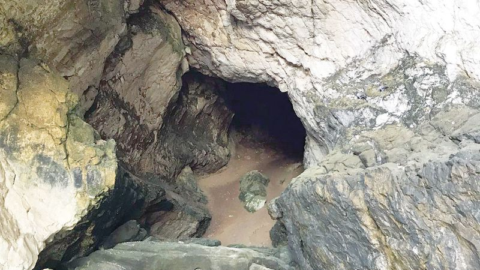

يعد وادي البطحاء من أشهر الوجهات السياحية في ولاية جعلان، حيث يمتاز بمناظره الطبيعية الخلابة وتدفق المياه بين الصخور. إنه مكان مثالي للنزهات العائلية والاستمتاع بجمال الطبيعة.
وادي البطحاء في ولاية جعلان، وجهة مثالية لعشاق الطبيعة.
يمثل حصن جعلان أحد أبرز المعالم التاريخية في الولاية، وقد شُيد للدفاع عن المنطقة وحمايتها. يتميز بتصميمه المعماري الفريد وإطلالته الرائعة على المناطق المحيطة.
حصن جعلان، شاهد على التاريخ العريق للولاية.
يُعتبر شاطئ رأس الحد من أجمل الشواطئ في سلطنة عمان، ويشتهر بأنه موقع لتكاثر السلاحف الخضراء النادرة. يوفر الشاطئ تجربة فريدة لمشاهدة السلاحف والتأمل في منظر شروق الشمس الساحر.
شاطئ رأس الحد، ملاذ السلاحف الخضراء وأحد أبرز الوجهات السياحية.
تحتضن ولاية جعلان مجموعة من الكهوف الطبيعية التي تجذب عشاق المغامرات والاستكشاف. تقدم الكهوف تجربة فريدة للتعرف على جمال التكوينات الجيولوجية.
الكهوف الطبيعية في جعلان، وجهة لعشاق المغامرة والاستكشاف.
السوق التقليدي في جعلان يعتبر من الأماكن التي تجسد الحياة اليومية في الولاية، حيث يُعرض فيه منتجات محلية تشمل الحرف اليدوية والمنتجات الزراعية.
السوق التقليدي، حيث يلتقي التراث بالحياة اليومية في ولاية جعلان.